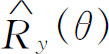
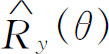
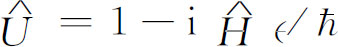
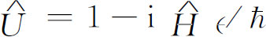
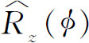
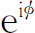
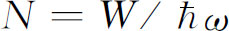
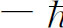
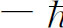
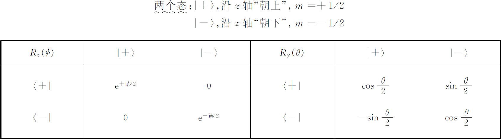

，并写为
，并写为在经典物理学中，许多物理量是守恒的，如动量、能量和角动量。在量子力学中也存在着对应于这些量的守恒定理。从某种意义上来说，量子力学最美妙之处在于它可以从其他一些东西导出这些守恒定理，而在经典力学中它们实际上是各定律的出发点。（在经典力学中，也有类似于我们在量子力学中用的这种处理方法，但这只有在很高深的水平上才能做到。）但是，在量子力学中，许多守恒定律与振幅的叠加原理及物理系统在各种变换下的对称性深刻关联。这就是本章的主题。虽然我们把这些概念主要应用到角动量的守恒上，但是最本质的一点在于：量子力学中所有物理量守恒的定理都与该系统的对称性有关。
因此，我们就从研究物理系统的对称性问题开始。氢分子离子是一个非常简单的例子——当然也可以氨分子为例——它们都有两个态。对氢分子离子来说，我们可把电子定域在第一个质子附近及定域在第二个质子附近这两种状态取作我们的基础态。这两个态——它们称为｜1〉和｜2〉——重画在图17-1（a）上。现在，只要这两个核是完全相同的，那么在这个物理系统中就存在某种对称性
。这就是说，如果我们以一个位于两质子距离的一半的中间平面来反射这个系统（所谓反射是指把平面一边的一切东西都移到另一边的对称位置上），则我们得到图17-1（b）的情形。由于两个质子是完全相同的，因此，这种反射操作
就使｜1〉变为｜2〉以及｜2〉变为｜1〉。我们把这个反射操作称为
，并写为
所以在这种意义上
是一个算符，它的“作用
”是使一个态成为一个新的态。有趣的是 作用于任何
一个态所产生的是该系统的另外
某个态。
作用于任何
一个态所产生的是该系统的另外
某个态。
图17-1 如果态｜1〉和｜2〉对平面P -P 反射，则它们分别变成态｜2〉和｜1〉
与我们以前描述的任何算符一样， 也具有矩阵元，它可以用通常的符号来定义。如果在
也具有矩阵元，它可以用通常的符号来定义。如果在 ｜1〉和
｜1〉和 ｜2〉的左边乘以〈1｜，就得到矩阵元
｜2〉的左边乘以〈1｜，就得到矩阵元
根据式（17.1），它们为
同样的方法可得P
21
和P
22
。 对于
基础态｜1〉和｜2〉的矩阵为
对于
基础态｜1〉和｜2〉的矩阵为
我们再次看到在量子力学中算符
和矩阵
这两个词实际上是可以互相通用的。它们之间只有一些技术性的差别，就像“数字”和“数”的差别一样，但是这种差别有点学究式，我们不必为之操心。所以不论 定义一个操作，还是实际上用来定义一个数字矩阵，我们可以随意把它称为算符或矩阵。
定义一个操作，还是实际上用来定义一个数字矩阵，我们可以随意把它称为算符或矩阵。
现在要指出，我们假定 整个氢分子离子系统的物理性质 是对称的 。例如，它并不一定要与邻近的别的事物有关。然而，如果这个系统是对称的话，那么下面的概念肯定是正确的。假设系统在t ＝0时处于态｜1〉，经过一段时间t 后，我们发现系统处于一个较为复杂的情况——两个基础态的某种线性组合。记得我们在第8章中用乘以算符 来代表“经过一段时间”。这就是说，系统过一会儿——为明确起见，譬如说15s——后处在另外某个态。例如，它可能是由 的态｜1〉和 的态｜2〉组成的态，我们可写成：
现在我们问，如果开始时系统处于对称 态｜2〉，则在同样的条件下 经15s后系统会发生什么变化？显然，如果世界是对称的——正如我们所假定的那样——我们将得到与式（17.4）对称的态：
图17-2表示两个同样的概念。所以如果一个系统的物理性质相对某个平面是对称的，并且我们求得了一个特定态的行为，也就知道了原来的态对此对称平面反射后所得到的态的行为。
图17-2 在一对称系统中，如果纯态｜1〉的发展如图（a）所示，则纯态｜2〉的发展必将如图（b）所示
现在我们希望把同样这些事情讲得更为一般化一些——这也就意味着稍微抽象一些。设 是任何一个不改变系统物理性质
的操作。例如，我们可以把对氢分子的两个原子中间的平面上的反射
操作
是任何一个不改变系统物理性质
的操作。例如，我们可以把对氢分子的两个原子中间的平面上的反射
操作 取作为
取作为 。或者，在一个具有两个电子的系统中，我们可以把交换
两个电子的操作
看作
。或者，在一个具有两个电子的系统中，我们可以把交换
两个电子的操作
看作 。另一个可能的操作是在一个球对称系统中，整个系统绕某个轴转动有限角度的操作，这种操作并不改变系统的物理性质。当然，我们总是对每种特定情况给
。另一个可能的操作是在一个球对称系统中，整个系统绕某个轴转动有限角度的操作，这种操作并不改变系统的物理性质。当然，我们总是对每种特定情况给 以某种特殊记号。明确地讲，我们通常把系统“绕y
轴旋转θ
角”的操作定义为
。对于
以某种特殊记号。明确地讲，我们通常把系统“绕y
轴旋转θ
角”的操作定义为
。对于 ，我们指的就是前面所描述过的，或者其他基本物理情况保持不变的任一操作。
，我们指的就是前面所描述过的，或者其他基本物理情况保持不变的任一操作。
让我们再考虑几个例子。如果一个原子没有加外磁场 或外电场 ，并且如果使坐标轴绕任意一个轴旋转，则它仍然是相同的物理系统。再如氨分子，对于在平行于3个氢分子的平面上的反射是对称的——只要不存在电场。如果存在电场，并当我们作反射时，也不得不改变电场，这样就改变了物理问题。但是如果没有外场，这个分子就是对称的。
现在我们来讨论一种一般情况。假设我们由态｜ψ 1 〉开始，在给定的物理条件下经过某段时间后，它变成了态｜ψ 2 〉。我们可以写成
［你可以联想到式（17.4）。］现在设想我们对整个系统施以操作 ，态｜ψ
1
〉将转变成态
，我们也可把
写成
，同样态｜ψ
2
〉变成
。现在如果在
作用下系统的物理性质是对称的
（不要忘记如果
，因为这并不是系统的一般性质），那么在同样的条件下经过相同的时间，我们应得
，态｜ψ
1
〉将转变成态
，我们也可把
写成
，同样态｜ψ
2
〉变成
。现在如果在
作用下系统的物理性质是对称的
（不要忘记如果
，因为这并不是系统的一般性质），那么在同样的条件下经过相同的时间，我们应得
［与式（17.5）相似。］但是我们可以把 写成 并把 写成 ，因此式（17.7）也可写成
现在如果用 代替｜ψ 2 〉——式（17.6）——我们得到
我们不难理解上面这个式子的意义。就氢离子而言，上式告诉我们：“先反射再等一段时间”［式（17.9）右边所示］与“先等一段时间然后再反射”［式（17.9）左边所示］是相同的。只要在反射的情况下U 不变，这两种情形就相同。
由于式（17.9）对任何 初始状态｜ψ 1 〉均成立，所以实际上该式是一个关于算符的方程：

这就是我们希望得出的结果——它是对称性的数学表述
。当式（17.10）成立时，我们说算符
和 对易
。于是我们就可用下列方式来定义
对称性：当
对易
。于是我们就可用下列方式来定义
对称性：当 与
与 （时间的转移操作）相对易时，物理系统对于操作
（时间的转移操作）相对易时，物理系统对于操作 是对称
的。［用矩阵来表示，两个算符的乘积等价于矩阵的乘积。所以，对于在变换Q
下是对称的物理系统，式（17.10）对矩阵Q
和U
也成立。］
是对称
的。［用矩阵来表示，两个算符的乘积等价于矩阵的乘积。所以，对于在变换Q
下是对称的物理系统，式（17.10）对矩阵Q
和U
也成立。］
顺便指出，因为对于无限小的时间 而言，
，式中
而言，
，式中 为通常的哈密顿（参见第8章），所以你可以看出，若式（17.10）成立，则下式
为通常的哈密顿（参见第8章），所以你可以看出，若式（17.10）成立，则下式
也成立。因此式（17.11）是关于一个物理情况对操作 具有对称性的条件的数学表述。它定义
了对称性。
具有对称性的条件的数学表述。它定义
了对称性。
在应用刚才所得到的结果之前，我们再讨论一些关于对称的概念。假设有一非常特殊的情况：当我们把 作用于某一态后，仍得到相同的态。这是一个非常特殊的情形，但是让我们假定碰巧对态｜ψ
0
〉这种情形是正确的，即
作用于某一态后，仍得到相同的态。这是一个非常特殊的情形，但是让我们假定碰巧对态｜ψ
0
〉这种情形是正确的，即 在物理上和｜ψ
0
〉是相同的态。这意味着｜ψ
′〉和｜ψ
0
〉除相差某个相位因子
(2)
外是相等的。怎样才能发生这种情况呢？举例来说，假设我们有一个
在物理上和｜ψ
0
〉是相同的态。这意味着｜ψ
′〉和｜ψ
0
〉除相差某个相位因子
(2)
外是相等的。怎样才能发生这种情况呢？举例来说，假设我们有一个 离子处于我们曾称为｜I〉
(3)
的态中。这个态在基础态｜1〉和｜2〉中具有相同的振幅。它们的概率如图17-3（a）中的线条图所示。如果我们把反射算符
离子处于我们曾称为｜I〉
(3)
的态中。这个态在基础态｜1〉和｜2〉中具有相同的振幅。它们的概率如图17-3（a）中的线条图所示。如果我们把反射算符 作用于｜I〉，它将使态翻转，｜1〉变成｜2〉，｜2〉变成｜1〉，其概率如图17-3（b）所示。但是这正好又是态｜I〉。如果我们从态｜II〉开始，反射前后的概率看上去完全相同。可是，如果考察其振幅
，就有所差异了。对于态｜I〉来说，反射后的振幅没有改变
，但对态｜II〉来说，振幅要反号。换句话说，
作用于｜I〉，它将使态翻转，｜1〉变成｜2〉，｜2〉变成｜1〉，其概率如图17-3（b）所示。但是这正好又是态｜I〉。如果我们从态｜II〉开始，反射前后的概率看上去完全相同。可是，如果考察其振幅
，就有所差异了。对于态｜I〉来说，反射后的振幅没有改变
，但对态｜II〉来说，振幅要反号。换句话说，
如果我们写成 ，则对态｜I〉来说， ，而对态｜II〉来说， 。
图17-3 态｜I〉和由｜I〉经中心平面反射而得到的态
让我们再看一下另一个例子。假设有一个右旋圆偏振光子沿z 方向传播，如果我们进行绕z 轴转动的操作，我们知道这只是对振幅乘以 ，其中φ 是转动的角度。所以对于这种情况下的转动操作来说，δ 就等于旋转角。
现在很清楚，如果碰巧算符Q 在某个时候，譬如t ＝0，只是改变一个态的相位，那么它永远会改变态的相位 。换言之，如果态｜ψ 1 〉在一段时间t 后变成态｜ψ 2 〉，即
并且如果情况的对称性使得
那么下式也成立
显然，由于
而且如果 ，则
［这一系列等式来自式（17.13）、（17.14）和关于对称系统的式（17.10），以及来自 这样的数与算符对易这一事实。］
这样的数与算符对易这一事实。］
所以由于某些对称性，某个在开始时是正确的事物，在其他任何时候也是正确的。而这不就是守恒定律 吗？是的！它表明如果你们考察初态，并且通过稍微作一点计算发现一个操作（系统的对称操作 ）仅仅导致乘以一个相位因子，那么，你们就知道终态也具有相同的性质——相同的操作使终态乘上相同的相位因子。即使我们也许一点不知道使系统从初态变化到终态的宇宙内部机理，上述结论也总是正确的。即使我们无意考察系统从一个态变到另一个态的机构的具体细节，我们仍可断言：如果一个事物原来处于具有某种对称性的状态，而且如果这一事物的哈密顿在该对称操作下是对称的，那么，这个态在任何时候都具有相同的对称特征。这就是量子力学中所有守恒定律的基础。
看一个特殊例子。让我们回到算符 ，首先我们要稍微修正一下我们对
，首先我们要稍微修正一下我们对 的定义。应该认为
的定义。应该认为 不仅仅是镜面反射，因为那样需要先定义一个安放镜子的平面。有一种特殊的反射不需要这种明确的平面。假定我们这样来重新定义操作
不仅仅是镜面反射，因为那样需要先定义一个安放镜子的平面。有一种特殊的反射不需要这种明确的平面。假定我们这样来重新定义操作 ：首先用在x
y
平面上的平面镜来反射，以使z
变成－z
，而x
仍为x
，y
仍为y
；然后把该系统绕z
轴旋转180°，于是x
变为－x
，y
变为－y
。这整个过程称为反演
。每一点都通过原点
而被投影到正好相对的位置上，每一点的所有坐标都改变了符号。我们仍用符号
：首先用在x
y
平面上的平面镜来反射，以使z
变成－z
，而x
仍为x
，y
仍为y
；然后把该系统绕z
轴旋转180°，于是x
变为－x
，y
变为－y
。这整个过程称为反演
。每一点都通过原点
而被投影到正好相对的位置上，每一点的所有坐标都改变了符号。我们仍用符号 表示这种操作，如图17-4所示。这比单纯反射要方便一点，因为它不要求你指明用哪个坐标平面来反射，而只要指明位于对称中心的哪个点就行了。
表示这种操作，如图17-4所示。这比单纯反射要方便一点，因为它不要求你指明用哪个坐标平面来反射，而只要指明位于对称中心的哪个点就行了。
图17-4 反演操作 ，位于（x
，y
，z
）处的任意点A
被移至位于（－x
，－y
，－z
）处的A
′点
，位于（x
，y
，z
）处的任意点A
被移至位于（－x
，－y
，－z
）处的A
′点
现在设态｜ψ 0 〉经反演操作后变为 ——即
然后假设我们再反演一次。两次 反演后我们正好又回到开始的状态，根本没有发生什么变化。我们必定得到
但
由之得到
所以如果反演算符是态的一种对称运算 ，则δ 只有两种可能：
这就是说
在经典物理学中，如果一个态在反演下是对称的，则反演操作给出原来的态。但是在量子力学中，却有两种可能性：我们得到的是原来 的态或是负的 原来态。当我们得到原来的态、即 时，我们就说态｜ψ 0 〉具有偶宇称 ；当符号改变 时，我们就说该态具有奇宇称 。（反演算符 也称为宇称算符。） 的态｜I〉具有偶宇称，而态｜II〉具有奇宇称——参看式（17.12）。当然也有一些态，它们在 的作用下没有对称性，这些是没有确定宇称的态。例如在 的系统中，态｜I〉具有偶宇称，态｜II〉具有奇宇称，而态｜1〉的宇称不确定。
当我们谈到像反演这样的操作作用于“物理系统 ”时，我们可以用两种方式来考虑这个问题。我们可以想象将位于 r 处的任何物理的 东西都移动 到－ r 处，或者想象从新的参照系x ′，y ′，z ′来考察 同一系统，新参照系与原来的参照系x ，y ，z 的关系为：x ′＝－x ，y ′＝－y ，z ′＝－z 。同样，当我们考虑转动时，可以想象物理系统作实体转动，或者想象“系统”在空间固定不动，而转动我们对系统作测量的那个坐标系。一般来说，这两种看法实质上是等价的。对转动来说，如果不说系统 转过θ 角而说把参考系转过负 θ 角，这两种观点是等价的。在本讲义中我们通常讨论投影到一组新坐标轴上后发生些什么，这样得到的结果和你把坐标轴固定，而把系统反向转过同样大小的角度后得到的结果是相同的。当你这样做时，角度的符号反过来了 (4) 。
许多物理定律——但不是所有的定律——在坐标反射或反演下是不变的。它们对反演是对称
的。例如，电动力学的定律，如果我们把所有方程中的x
变成－x
，y
变成－y
，z
变成－z
，它们都是不变的。重力定律和核物理的强相互作用定律也是如此。只有弱相互作用——引起β
衰变的相互作用——不具有这种对称性。（在第1卷第52章中我们曾详细地讨论过这个问题。）我们现在不考虑β
衰变。那么在预料β
衰变不会产生显著影响的任何物理系统中——原子的光发射就是一个例子——哈密顿算符
将和算符 对易。在此情形下，我们就有下述命题：如果一个态原来具有偶宇称，并且假如你在以后某个时刻观察其物理情况，它将仍然具有偶宇称。例如，假定一个即将发射光子的原子所处的状态具有偶宇称，在发射光子后，考察包括光子在内的整个系统，它仍然具有偶宇称（如果开始时系统具有奇宇称也一样。）这个原理称为宇称守恒
。你可以看出，为什么在量子力学中“宇称守恒”和“反射对称”这两个名词是紧密地互相交织在一起的。虽然直到不多几年以前，大家还认为在自然界中宇称总是守恒的，但现在我们知道这是不正确的。由于β
衰变反应不具有其他物理定律所具有的反演对称性，才发现以前的看法是错误的。
对易。在此情形下，我们就有下述命题：如果一个态原来具有偶宇称，并且假如你在以后某个时刻观察其物理情况，它将仍然具有偶宇称。例如，假定一个即将发射光子的原子所处的状态具有偶宇称，在发射光子后，考察包括光子在内的整个系统，它仍然具有偶宇称（如果开始时系统具有奇宇称也一样。）这个原理称为宇称守恒
。你可以看出，为什么在量子力学中“宇称守恒”和“反射对称”这两个名词是紧密地互相交织在一起的。虽然直到不多几年以前，大家还认为在自然界中宇称总是守恒的，但现在我们知道这是不正确的。由于β
衰变反应不具有其他物理定律所具有的反演对称性，才发现以前的看法是错误的。
现在我们可以来证明一个有趣的定理（只要我们能够忽略弱相互作用，这定律就是正确的）。任何具有确定能量的态，只要它不是简并的，它必定具有确定的宇称，它肯定不是具有偶宇称就是具有奇宇称。（记得我们曾看到过这种系统，其中的几个态具有相同的能量——我们称这些态是简并的 。我们的定理对它们不适用。）
对于一个具有确定能量的态｜ψ 0 〉来说，我们知道
式中E
只是一个数，即这个态的能量。如果任意
算符 是系统的一个对称算符，则只要｜ψ
0
〉是确定能量的唯一一个态，就可以证明
是系统的一个对称算符，则只要｜ψ
0
〉是确定能量的唯一一个态，就可以证明
考虑经
作用后所得到的新态
，如果物理状态是对称的，则 必定与｜ψ
0
〉具有相同的能量。但是我们所考虑的是只有一个
态，即｜ψ
0
〉，具有这一能量的情形，所以
必定是同一个态——它与｜ψ
0
〉只可能相差一个相位。这就是在物理上的论证。
必定与｜ψ
0
〉具有相同的能量。但是我们所考虑的是只有一个
态，即｜ψ
0
〉，具有这一能量的情形，所以
必定是同一个态——它与｜ψ
0
〉只可能相差一个相位。这就是在物理上的论证。
从数学上可以得到同样的结论。式（17.10）或式（17.11）是对称性的定义（这定义对任何态都成立），
但是我们考虑的只是一个态｜ψ
0
〉，它是一个具有确定能量的态，所以
。由于E
只是一个数，如果需要，可将它移到 的前面，我们得
的前面，我们得
因此
故 也是 的一个具有确定能量的态——具有同样的E 。但是根据我们的假设，只存在一个这样的态，因此，必定为 。
我们刚才所证明的结果，对于物理系统的任何对称算符 都是正确的。所以，在我们只考虑电力和强相互作用的情况下（没有β 衰变），反演对称是一个许可的近似，我们得 。但是我们也已看到， 不是＋1就是－1。所以任何具有确定能量的态（非简并态），不是具有偶宇称就是具有奇宇称。
现在我们转而讨论另一个操作的有趣例子：转动。考虑将原子系统绕z 轴旋转角φ 这样一种特殊的转动算符，我们称这种算符 (5) 为 。我们假定这样操作并不影响物理系统沿x 轴和y 轴的情况。任何电场或磁场都取成平行于z 轴 (6) ，从而，如果整个物理系统绕z 轴旋转，外界 条件不致改变。例如，如果在空间有一个原子，我们将它绕z 轴转过φ 角，仍然得出相同的物理系统。
有些特殊的状态 具有这种性质：上述操作产生的新态是原来的态乘上某个相位因子。让我们顺便很快地证明一下，如果是这样，则相位的变化必定总是与角φ 成正比的。假设你的角φ 转动两次，这与以角2φ 转动一次是一回事。如果转动φ 具有态｜ψ 0 〉乘以相位 的效果，所以
那么连续两次这样的转动应对该态乘以因子 ，因为
相位的变化δ 必须正比于φ (7) 。我们接着来考虑这样的特殊状态。对该态来说
式中m 是某个实数。
我们还知道值得注意的事实是：如果系统对于绕z
轴的转动是对称的，并且如果
原来的状态正好具有满足式（17.22）的性质，那么这个态以后也具有这一性质。所以m
这个数很重要。如果我们开始时知道它的值，就知道了它结尾时的值。它是一个守恒
的数——m
是一个运动常数
。我们特别提出m
进行讨论是因为它与任何特殊角度φ
没有任何关系，并且还因为它与经典力学中的某些量相对应。在量子
力学中，对于｜ψ
0
〉这样的态，我们决定把
称为绕z
轴的角动量
。如果这样，我们发现在大系统的极限下，上述的量就等于经典力学中角动量的z
分量。所以，如果有一个态，它绕z
轴的转动正好产生了一个相位因子
，那么这个态绕该轴就有确定的角动量，而且角动量是守恒的，它现在是、并且永远是 。当然，也可以绕任何轴转动，而且得出对不同的轴角动量守恒的结论。你们看到，角动量守恒是与下列事实密切相关的，即当你转动一下系统时你得到相同的态，该态仅具有一个新的相位因子。
。当然，也可以绕任何轴转动，而且得出对不同的轴角动量守恒的结论。你们看到，角动量守恒是与下列事实密切相关的，即当你转动一下系统时你得到相同的态，该态仅具有一个新的相位因子。
我们要指出这个概念是相当普遍的。我们将把它应用到另外两个守恒定律上去，这两条守恒定律与角动量守恒定律在物理概念上是完全一致的。在经典物理中我们还有动量守恒和能量守恒，有趣的是这两个定律也同样与某种物理对称性有关。
假定有一个物理系统——一个原子、某些复杂的原子核、或一个分子或某个事物——而且假定如果我们将整个系统移动到别的地方，不会对它产生任何影响，那么该系统的哈密顿就具有这种性质：在某种意义上它仅仅与系统的内部坐标 有关，而与空间的绝对位置 无关。在这种情况下存在一种我们可进行的特殊对称操作，它就是空间的平移。让我们定义 为沿x 轴移动距离a 的位移算符，这样，对任何态我们可以进行这一操作而得到一个新的态。但是也可能有一些非常特殊的态，当把它们沿x 轴移动a 时，我们仍然得到与原来相同的态，只是相差一个相位因子。我们还可以像上面那样来证明，对于这一情形相位必定正比于a 。所以对这些特殊态｜ψ 0 〉，我们可以写下
系数k
乘以 后称为动量的x
分量
。我们这样称呼的理由是：对于一个大的体系，它和经典动量p
x
在数值上是相等的。普遍的表述是这样的：当一个系统位移时，若该系统的哈密顿不变，而且如果该系统开始时具有确定的x
方向的动量，那么，随着时间的推移，系统在x
方向的动量将一直保持不变。一个系统的总动量在碰撞或爆炸前后将是相同的。
后称为动量的x
分量
。我们这样称呼的理由是：对于一个大的体系，它和经典动量p
x
在数值上是相等的。普遍的表述是这样的：当一个系统位移时，若该系统的哈密顿不变，而且如果该系统开始时具有确定的x
方向的动量，那么，随着时间的推移，系统在x
方向的动量将一直保持不变。一个系统的总动量在碰撞或爆炸前后将是相同的。
另外还有一个与在空间的位移很相似的操作：即时间的延迟。假设有一个物理系统，不存在与时间有关的外部条件，我们使它在某一时刻从某一状态开始变化。现在在另一次实验中，例如我们在两秒钟以后，或者说延迟了时间τ 以后开始使此物理系统作同样的变化，而且如果外界条件与绝对时间无关，其演变将相同，所得到的终态也与刚才得到的终态相同，只不过推迟了时间τ 。在那种情形下，我们还可以发现一些特殊的状态，它们随时间的进展具有这种特性，即延迟后的态正好是原来的态乘上一个相位因子。对这些特殊状态来说其相位的变化显然又必定与τ 成正比。我们可以写成
在定义ω 的时候习惯上使用负号，采用这一习惯， 就是系统的能量 ，而且它是守恒 的。所以具有确定能量的系统是这样的系统，它经时间位移τ 后仍旧是它本身再乘以 。（这就是我们在前面定义具有确定能量的量子态时所说的，因此我们是前后一致的。）这意味着，如果一个系统处在确定能量的状态，而且如果其哈密顿与时间t 无关，那么不论发生什么情况，它在以后所有各时刻都会具有相同的能量。
至此你一定看出了守恒定律与宇宙对称性之间的关系。有关时间位移的对称性意味着能量守恒；有关空间位置x ，y 或z 的位移对称性意味着动量分量守恒；有关绕x ，y 和z 轴旋转的对称性意味着角动量的x ，y 和z 分量守恒；与反映有关的对称性意味着宇称守恒；与两个电子交换有关的对称性意味着某种我们还未命名的守恒，等等。这些原理中的一部分与经典物理中的类似，另一部分在经典物理中没有。量子力学中存在的守恒定律比经典力学中所用的要多，至少比经典力学中通常使用的要多。
为了使你们能够阅读其他量子力学书籍，我们有必要作些小的技术上的说明——介绍一下人们常用的符号。当然，与时间有关的位移操作，就是我们以前谈到的 ：
大多数人都喜欢用无限小 的时间位移、无限小的空间位移或无限小角度的转动来讨论每件事情。既然任何有限位移和角度都可以由一连串的无限小的位移和角度累积而成，所以首先来分析无限小的情况往往就比较容易。无限小时间位移Δt 的算符（正如我们在第8章中所定义的）为
于是 和称为能量的经典物理量相类似，因为如果 刚好是一个常数乘上｜ψ 〉，即 ，则该常数就是系统的能量。
对其他操作也作同样处理。如果我们在x 方向作一小位移，譬如Δx ，一般说来 ，态｜ψ 〉将变成另一个态｜ψ ′〉。我们可以写成
因为当Δx 趋近零时，｜ψ ′〉应正好变为｜ψ 〉，或 ，并且对于小的Δx 来说， 与1之差应该正比于Δx 。按这种方式定义的算符 称为动量算符——当然指的是x 分量。
同理，人们通常把小的转动写成

并且称 为角动量的z 分量算符。对于那些 的特殊状态，我们可以对任何小角度Δφ ，将该式右边展开至Δφ 的第一级而得到
将此式与式（17.28）中 的定义相比较，我们得到
换言之，如果你们把
作用到对z
轴具有确定角动量
的态上，则得出 乘以同样的态，其中
为角动量的z
分量的数值。这与把
作用在具有确定能量的态上得到E
｜ψ
〉十分类似。
乘以同样的态，其中
为角动量的z
分量的数值。这与把
作用在具有确定能量的态上得到E
｜ψ
〉十分类似。
我们现在要对角动量守恒的概念举些应用的例子，以告诉你们这些概念是怎样起作用的。其意义在于它们实在非常简单。你们以前就知道角动量是守恒的，从本章中你们真正要记住的只是如果一个态｜ψ
0
〉具有绕z
轴转动一角度φ
后变成
这一性质，它的角动量的z
分量就等于 。这就是以后我们要做许多有趣工作时所需要的全部知识。
。这就是以后我们要做许多有趣工作时所需要的全部知识。
首先我们希望检验一个概念。在§11-4中我们已证明，当在绕z 轴 (8) 转过角φ 的坐标系中来观看右旋圆偏振光时，它要乘上 。这是否意味着该右旋圆偏振的光子沿z 轴具有一个 单位 (9) 的角动量呢？的确是这样。 这也意味着，如果我们有一束光，它所含有的大量光子都具有同样的圆偏振——就像经典光束那样——那么这束光就具有角动量。如果在某时刻光束所具有的总能量为W ，那么就有 个光子，每个光子具有角动量 ，所以总角动量为
我们能否用经典的方法证明右旋圆偏振光带有与W
/ω
成正比的能量和角动量呢？如果一切都正确的话，这应该是一个经典的命题。这是一个我们可以从量子物理过渡到经典物理的例子。我们应该来看一下经典物理是否证实这一点。它将给予我们一个概念，即是否有权把m
称为角动量。回忆一下在经典物理中右旋圆偏振光是怎样的。它用一个电场来描写，该电场具有振动的x
分量和振动的y
分量，两者的相位差90°，所以合电场矢量 在如图17-5（a）所示的圆上旋转。现在假设这种光照射到一个吸收（或者至少部分吸收）它的墙壁上，并且按照经典物理的观点来考虑墙内的一个原子。我们以前通常把原子中电子的运动看成是一个可以用外场来驱使它振动的谐振子。我们假定该原子是各向同性的，从而它可以在x
方向上和y
方向上同样地振动。另外在圆偏振光中，其x
位移和y
位移相同，但是一个比另一个落后90°。最后的结果是该电子也在一个圆上运动，如图17-5（b）所示。该电子离开平衡位置原点有一个位移
r
，作圆运动，相对于矢量
在如图17-5（a）所示的圆上旋转。现在假设这种光照射到一个吸收（或者至少部分吸收）它的墙壁上，并且按照经典物理的观点来考虑墙内的一个原子。我们以前通常把原子中电子的运动看成是一个可以用外场来驱使它振动的谐振子。我们假定该原子是各向同性的，从而它可以在x
方向上和y
方向上同样地振动。另外在圆偏振光中，其x
位移和y
位移相同，但是一个比另一个落后90°。最后的结果是该电子也在一个圆上运动，如图17-5（b）所示。该电子离开平衡位置原点有一个位移
r
，作圆运动，相对于矢量 它滞后某个相位。
和
r
之间的关系如图17-5（b）所示。随着时间的推移，电场不断旋转，而位移则以相同的频率旋转，结果它们的相对取向保持不变。现在让我们观察电场对该电子所作之功。给予这个电子的功率为电子的速度v
乘上平行于这个速度的
的分量：
它滞后某个相位。
和
r
之间的关系如图17-5（b）所示。随着时间的推移，电场不断旋转，而位移则以相同的频率旋转，结果它们的相对取向保持不变。现在让我们观察电场对该电子所作之功。给予这个电子的功率为电子的速度v
乘上平行于这个速度的
的分量：
但是注意，有角动量注入该电子，因为始终存在着对于原点的力矩。此力矩为 ，它必定等于角动量的变化率 ：
因v ＝ω r ，所以我们得
因此，如果我们对吸收的总角动量积分，则它就正比于总能量——比例系数为1/ω
，与式（17.30）一致。光的确带有角动量——如果光沿z
轴是右旋圆偏振的，则为＋1单位（乘以 ），如果是左旋圆偏振的，则沿z
轴为－1单位。
），如果是左旋圆偏振的，则沿z
轴为－1单位。
图17-5 （a）圆偏振光波的电场 ；（b）圆偏振光驱动的电子的运动
；（b）圆偏振光驱动的电子的运动
现在我们提出如下问题：如果光是在x
方向线偏振的，那么它的角动量如何？x
方向的偏振光可以用右旋圆偏振光和左旋圆偏振光的叠加来表示。因此，它对角动量为
具有一定的振幅，对角动量为
具有另一振幅，结果它没有确定
的角动量。它既有一定的振幅以 出现，又具有相等的振幅以
出现。这样两个振幅的干涉产生了线偏振，但它具有相同
的概率以＋1或－1单位的角动量出现。对一束线偏振光的宏观测量表明：它的总角动量为零。因为在大量光子中，右旋圆偏振和左旋圆偏振光子的数目接近相等，它们贡献的角动量相反——平均角动量为零。所以在经典理论中，除非存在着一定的圆偏振，否则你们就测不出角动量。
出现，又具有相等的振幅以
出现。这样两个振幅的干涉产生了线偏振，但它具有相同
的概率以＋1或－1单位的角动量出现。对一束线偏振光的宏观测量表明：它的总角动量为零。因为在大量光子中，右旋圆偏振和左旋圆偏振光子的数目接近相等，它们贡献的角动量相反——平均角动量为零。所以在经典理论中，除非存在着一定的圆偏振，否则你们就测不出角动量。
我们曾说过，任何自旋1的粒子可以具有3个J z 值，即＋1，0，－1（即我们在施特恩-格拉赫实验中看到的3个态）。但光是螺旋型的，它只有两个态，而没有为零的态。这一奇特的缺漏与光不能静止这个事实有关。对于一个自旋j 的静止的粒子来说，必定有2j ＋1个可能的态，其J z 值以1为梯级从－j 增加到＋j 。但是可以证明，对某些自旋为j 而质量为零的粒子来说，只存在沿运动方向的分量为＋j 和－j 的态。例如，光没有3个态，只有两个——虽然光子仍然是一个自旋1的客体。这和我们早先根据在空间旋转条件下发生的情况证明的自旋1的粒子必须具有3个态如何相一致呢？对于一个静止的粒子来说，可以绕任何轴旋转而不改变其动量状态。静止质量为零的粒子（如光子和中微子）不可能静止下来，只有绕沿运动方向的轴旋转才不改变其动量状态。关于只绕一个轴的转动的论证不足以证明需要具有3个态，而且其中一个态在旋转角φ 的情况下系按照 变化的 (10) 。
还有一件值得注意的事。一般说来，对于一个静止质量为零的粒子，相对其运动方向的两个自旋态（＋j ，－j ）中只有一个 是真正必须的。例如中微子——它是自旋1/2的粒子——在自然界中只有角动量分量与其运动方向相反 的那个态（ ）才存在［而反中微子只有沿 运动方向的态（ ）］。当一个系统具有反演对称性（从而宇称守恒，光就是这样的）时，才需要有两个分量（＋j 和－j ）。
现在我们想举一个例子，说明如何应用角动量守恒定理来处理一个特殊的量子物理问题。我们来看看Λ0 粒子的崩裂，它通过“弱”相互作用衰变为一个质子和一个π － 介子：

假定已知π － 介子的自旋为零，质子的自旋为1/2，Λ0 的自旋为1/2。我们希望解决下列问题：假设Λ0 是以一种使其完全极化方式产生的——所谓极化指的是相对某个适当选取的z 轴，它的自旋“向上”——参看图17-6（a）。我们的问题是，相对z 轴以角度θ 发射质子［如图17-6（b）所示］的衰变概率是多少？换言之，衰变的角分布如何？我们在Λ0 是静止的坐标系中来观察这种衰变，即在这个静止参照系中来测量角度，然后，如果需要的话，总可以把测得的结果变换到其他参照系中去。
图17-6 一个自旋向上的Λ0 粒子衰变成一个质子和一个π － 介子（在质心参考系中）。在角θ 方向发射质子的概率是多少呢？
我们从下面这个特殊情况着手，就是质子发射到沿z 轴很小的一个立体角ΔΩ 中（如图17-7）。在衰变前Λ0 的自旋向上，如图17-7（a）所示，经过短时间后——由于至今还不知道的原因，除非与弱衰变有关，——Λ0 炸裂成一个质子和一个π 介子。假定质子沿＋z 轴向上运动。于是，根据动量守恒，π 介子必定向下运动。既然质子是自旋1/2的粒子，其自旋必定不是“朝上”就是“朝下”——原则上有两种可能，如图中（b）和（c）所示。但是角动量守恒要求质子具有“向上”的自旋。这从下面的论证中很容易明白。一个沿z 轴运动的粒子，不可能因其运动而对沿这个轴的角动量有贡献，因此只有自旋才能对J z 有所贡献。衰变前对z 轴的自旋角动量为 ，因此衰变后也必须是 。我们可以说，既然π 介子的自旋为零，那末质子的自旋必定“朝上”。
图17-7 一自旋“朝上”的Λ0 粒子，以质子沿＋z 方向飞出的方式衰变的两种可能性。只有（b）角动量才守恒
如果你担心这种论证在量子力学中可能不正确，那么我们可以花一点时间来证明一下这种论证是正确的。我们把初态（衰变前的态）称为｜Λ0
，自旋＋z
〉，它具有如下性质：如果把该态绕z
轴旋转角φ
，则态矢量将乘上相位因子
。（在旋转后的参考系中态矢量为 ，自旋＋z
〉。）这就是我们所说的自旋1/2粒子自旋“朝上”的意思。由于自然界的行为不取决于我们对坐标轴的选取，所以终态（质子加π
介子）也必定具有相同的性质。譬如说，我们可以把终态写成
，自旋＋z
〉。）这就是我们所说的自旋1/2粒子自旋“朝上”的意思。由于自然界的行为不取决于我们对坐标轴的选取，所以终态（质子加π
介子）也必定具有相同的性质。譬如说，我们可以把终态写成
｜质子走向＋z ，自旋＋z ；π 介子走向－z 〉．
但是我们实在并不需要标明π 介子的运动，因为在我们所选取的坐标系中它的运动方向总是与质子的相反，所以我们可以把终态的描述简化为
｜质子走向＋z ，自旋＋z 〉．
那么如果我们把坐标绕z 轴旋转角φ ，这个态矢量会发生什么变化呢？
由于质子和π 介子都沿z 轴运动，它们的运动并不因这种旋转而改变。（这就是我们挑选这一特殊情况的原因，否则我们就不可能作这种论证。）再有，π 介子也不受影响，因为它的自旋是0。然后，质子的自旋是1/2。如果其自旋“朝上”，它将贡献转动引起的 的相位变化。（若质子的自旋“朝下”，则由于质子相位变化为 。）但是，如果要角动量守恒，（它必须守恒，因为没有外来因素影响系统的哈密顿。）那么激发前后由于旋转而产生的相位变化必须相同。所以唯一的可能性是质子自旋“朝上”。如果质子向上运动，它的自旋也必定“朝上”。
于是，我们得出结论，角动量守恒所允许的过程是图17-7中（b）所示的过程，而不允许图中（c）所示过程。既然我们知道，发生了衰变，对于过程（b）——质子向上运动而自旋也“朝上”——就存在某种振幅，让我们用a 来代表在无限小的时间间隔内以这种方式发生衰变的振幅 (11) 。
现在让我们来看看，如果开始时Λ0 的自旋是“朝下”的，则会发生什么情况呢？我们仍旧要问质子沿z 轴向上运动的衰变情况，如图17-8所示。你们一定知道，如果角动量守恒，则在这种情况下质子的自旋必定“朝下”。令这种衰变的振幅为b 。
图17-8 一个自旋“朝下”的Λ0 粒子沿z 轴的衰变
对于a 和b 这两个振幅，我们再不能多说什么了。它们与Λ0 的内部机理以及弱衰变有关，迄今还没有人知道如何计算这两个振幅。我们只能从实验中得到它们。但是只用这两个振幅就能够 求出所有我们想要知道的衰变的角分布。不过必须始终仔细地、完整地定义我们所谈到的那些态。
我们想要知道质子沿与z 轴成θ 角的方向（在小立体角ΔΩ 中）飞出去的概率，如图17-6所示。让我们在这个方向放置一个新的z 轴，称为z ′轴。我们知道如何分析沿这个轴发生的情况。相对于这个新轴，Λ0 的自旋不再肯定“朝上”，但它具有自旋“朝上”的某个振幅，还有自旋“朝下”的另一个振幅。我们在第6章以及第10章式（10.30）早已讨论过这些情形。自旋“朝上”的振幅为cosθ /2，而自旋“朝下”的振幅为 (12) －sinθ /2。当Λ0 的自旋沿z ′轴为“朝上”时，它将以振幅a 在＋z ′方向发射一个质子。所以沿z ′方向找到一个自旋“朝上”的出射质子的振幅为
同理，沿正z ′方向发现一个自旋“朝下”的出射质子的振幅为
这些振幅所代表的两个过程为图17-9所示。
图17-9 Λ0 的两个可能的衰变态
现在提一个很容易的问题。假定Λ0 沿z 轴自旋向上，衰变质子在θ 角方向离开的概率是多少？这两个自旋态（沿z ′方向“朝上”或“朝下”）是可以区分的，虽然我们不打算去观察它们。所以为了求得这个概率，我们将振幅平方，并把它们相加。在θ 附近很小的立体角ΔΩ 中找到一个质子的概率f （θ ）为
用 ，我们可将f （θ ）写成
因此角分布的形式为
该概率有一部分与θ 无关，另一部分随cosθ 而线性变化。通过测量角分布，我们可以求得α 和β ，从而求得｜a ｜和｜b ｜。
现在我们可以回答许多别的问题了。我们是否只对沿原来的z 轴自旋“朝上”的质子感兴趣呢？式（17.33）和（17.34）中的各项都给出沿z ′轴（＋z ′和－z ′）发现自旋“朝上”和自旋“朝下”的质子的振幅。相对原来的轴自旋“朝上”的态｜＋z 〉可以用基础态｜＋z ′〉和｜－z ′〉来表示。这样，我们就可以把式（17.33）和（17.34）两个振幅用适当的系数（cosθ /2和－sinθ /2）组合起来，而得到总的振幅：
它的平方就是质子以与Λ0 相同的自旋（沿z 轴“朝上”）、在θ 角方向出射的概率。
假如宇称是守恒的话，我们就可以再说一件事。图17-8中的衰变正好就是图17-7中的衰变对xy 平面的反射 (13) 。假如宇称是守恒的话，则b 就只能等于a 或－a 。于是式（17.37）中的系数α 就成为零，在各个方向发生衰变的概率就要相等。
但是实验结果表明，衰变中存在着 不对称性。测得的角分布的确如我们所预言的那样按cosθ 变化，而不是随cos2 θ 或cosθ 的任何其他幂次变化。实际上，既然角分布具有这个形式，我们从这些测量中可以推得Λ0 的自旋为1/2。而且我们看到宇称并不守恒。事实上，实验上得出的系数α 为－0.62±0.05，所以b 大约为a 的两倍，很明显，对反射来说不存在对称性。
你们看我们从角动量守恒中能够得到多少东西。在下一章中我们将列举更多的例子。
附注 本节中的振幅a 指的是：在无限小的时间dt 内从态｜Λ，自旋＋z 〉产生态｜质子走向＋z ，自旋＋z 〉的振幅，换言之，就是
这里的H 是整个宇宙、至少是引起Λ衰变的所有事物所构成的那部分宇宙的哈密顿。角动量守恒意味着哈密顿必须具有如下性质
对振幅b 我们指的是
角动量守恒意味着
如果式（17.33）和（17.34）中所写出的振幅还不清楚的话，那么我们可以用更为数学化的方式把它们表示如下。对式（17.33）我们指的是自旋沿＋z 轴的Λ衰变成一个沿＋z ′方向运动、其自旋也沿z ′方向的质子的振幅，即振幅
根据量子力学的一般定理，这个振幅可以写成
这里的求和是对静止的Λ粒子的各个基础态｜Λ，i 〉进行的。由于Λ粒子为自旋1/2，因此在任何我们希望选取的参考基础中存在两个这样的基础态。如果我们使用相对z ′（＋z ′，－z ′） 自旋“朝上”和自旋“朝下”这两个态作为基础态，式（17.43）的振幅就等于下列总和：
根据式（17.38）的定义，以及根据角动量守恒得到的式（17.41），上式第一项中的第一个因子就是a ，第二项的第一个因子为零。第一项中剩下的因子〈Λ，＋z ′｜Λ，＋z 〉正好就是一个沿一轴自旋“朝上”的自旋1/2粒子，它沿另一成θ 角的轴也具有“朝上”的自旋的振幅，其值为cosθ /2——参看表6-2。所以式（17.44）刚好为a cosθ /2，与我们在式（17.33）所写出的一样。对自旋“朝下”的Λ粒子作同样的论证，即得出式（17.34）的振幅。
我们现在要把所学过的关于自旋1/2和1的粒子转动的各种情况综合到一起，以便将来参考。下面你会看到有关自旋1/2的粒子和自旋1的粒子以及光子（它是自旋1、静止质量为0的粒子）的两个转动矩阵R z （φ ）和R y （θ ）的表格。对每一个自旋，我们将给出绕z 轴或y 轴转动的矩阵项〈j ｜R ｜i 〉。当然，它们和我们在前面几章中所用的〈＋T ，｜0S 〉这类振幅是完全等价的。R z （φ ）的意思是把一个态投影到一个绕z 轴旋转φ 角的新坐标系中去——永远采用右手定则来定义转动的正指向。R y （θ ）表示参考系绕y 轴旋转θ 角。知道了这两种转动后，你当然可以作出任何的转动。我们按惯例这样来写矩阵元，使左 边的态是新（转动过）的坐标系的一个基础态，而右边的态是老的（转动前的）坐标系中的基础态。你可以用多种方式来解释表中的各项。例如，表17-1中的项 表示矩阵元 。它也表示 ，它们全都是一回事。
表17-1 自旋1/2的转动矩阵
表17-2 自旋1的转动矩阵
表17-3 光子
————————————————————
(1) 复习：第一卷52章，物理定律的对称性。
参考：A．R．Edmonds，Angular Momentum in Quantum Mechanics，Princeton University Press，1957。——译者注
(2) 顺便指出，你们可以证明 必定是一个幺正算符 ，这意味着如果它作用在｜ψ 〉上而给出某个数乘以｜ψ 〉的话，这个数一定是 这种形式，这里δ 是实数。这是个小问题，其证明基于下述观察。诸如反射或转动这样的操作并不失去任何粒子，所以｜ψ ′〉和｜ψ 〉的归一化必定是相同的，它们只能相差一个纯虚数的相位因子。
(3) 参见10-1节，比之于前面的讨论，在本节中态｜I〉和｜II〉是反向的。
(4) 在别的书中你可能发现具有不同符号的公式，他们可能采用不同的角度定义。
(5) 我们将非常明确地把 定义为物理系统绕z 轴转动－φ ，这和把坐标系转动＋φ 相同。
(6) 假如在某时刻仅有一个场，并且场的方向保持不变，我们总可以把z 轴取为沿着场的方向。
(7)
要做更严格的证明，我们应对很小的转动角 作这种论证。因为任何角φ
都是n次
作这种论证。因为任何角φ
都是n次 角度的转动之和，
、则
，而总相位的改变就是小角度
所产生的相位改变的n
倍，所以与φ
成正比。
角度的转动之和，
、则
，而总相位的改变就是小角度
所产生的相位改变的n
倍，所以与φ
成正比。
(8) 请原谅，这个角与我们在§11-4中所用的角差一负号。
(9)
通常用
为单位来量度原子系统的角动量十分方便。这样，一个自旋1/2的粒子对任意轴的角动量为±1/2。或者一般地讲，角动量的z
分量为m
。你不必老是去重复那个 。
。
(10) 对于一个质量为零的粒子，我们曾试图至少找到一个证据，以证明其沿运动方向的角动量必定是h/2的整数倍，而不是像 这样的值。我们甚至用遍了洛伦兹变换的所有性质，但还是失败了。或许这种想法本身就不正确。我们不得不去找维格纳（Wigner）教授谈谈，他精通这方面的事情。
(11) 我们现在假定你们对量子力学的机理已经相当熟悉，因此我们可以用物理方式来讲述有关事情，而不去花时间写出所有的数学细节。如果你们对这里所讲的不很清楚，可以在本节末尾的注释中找到略去的细节。
(12) 我们选取z ′使其在xz 平面内，并利用有关R y （θ ）的矩阵元。对于任何别的选取，也将得到同样的答案。
(13) 我们记得自旋是个轴矢量，它在反射变换中要反向。